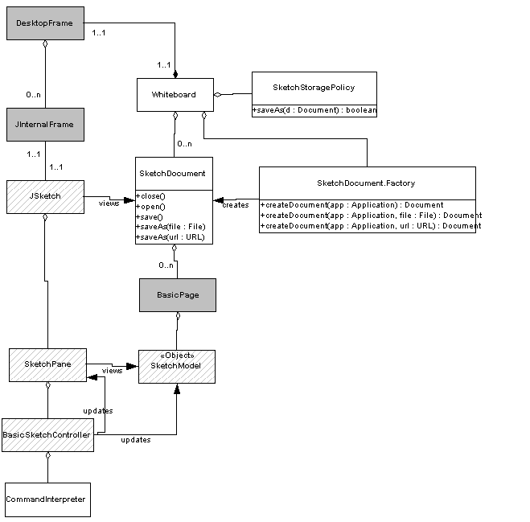

|
|
|
The document parser and writer architecture. |
The whiteboard package contains several classes which implement a digital whiteboard application. The whiteboard application is built within the diva.gui framework and uses the diva.sketch package to provide the sketch-based user interface. If you want to build your own sketch-based application quickly within this whiteboard framework, you can simply instantiate your own sketch controller and interpreter in Whiteboard.java.
The whiteboard application has the following features:
The following is a UML diagram of the whiteboard architecture. The classes with gray background belong to the diva.gui package, and the classes with slash pattern background belong to the diva.sketch package.
|
 |
|
The diva.whiteboard packge UML diagram |
A whiteboard contains multiple sketch documents each of which is associated with a frame. A document may contain multiple pages and the current viewing page needs to be displayed in the frame. Referring to the UML diagram, each sketch document is associated with a JSketch which knows how to display the document. More specifically, a page in the document is associated with a sketch pane which is used to view the sketch model contained in the page. When a page is selected for viewing, JSketch swaps in the pane that displays the page.
The whiteboard supports a few command gestures. The way it works is that strokes that are drawn with the right mouse button pressed will be interpreted by a command interpreter whereas strokes drawn with left mouse button pressed will not. Therefore users can sketch free forms with the left button and perform command gestures with the right button. A command interpreter receives mouse events as the user sketches on the canvas. It filters out the events that are performed with the left mouse button and only processes the events that are performed with the right mouse button. The command interpreter uses a gesture recognizer to recognize geometric shapes. If the recognizer anaylizes a stroke to be a "check" or a "scribble", the command interpreter will ask the controller to execute the corresponding actions.
The whiteboard also supports parsing and loading of documents. The followiing is a UML diagram that illustrates this framework.
|
|
|
The document parser and writer architecture. |
A DocumentParser can be used to parse all pages of a multi-page document from a file. It uses a model parser to parse the content of a page. This assumes that every page is associated with an application model. In the case of whiteboard, each page contains a sketch model and the document parser uses a sketch parser to parse each page. To see how this works, let's look at a short example:
<?xml version="1.0" standalone="no"?>
<!DOCTYPE document SYSTEM "document.dtd">
<document title="test2.sml">
<sheet title="Page 0" num="0">
<![CDATA[
<?xml version="1.0" standalone="no"?>
<!DOCTYPE sketchModel SYSTEM "sketch.dtd">
<sketchModel>
<stroke color="0.0 0.0 0.0" linewidth="2.0" points="10.0 10.0 940632311790 20.0 10.0 940632313392"/>
</sketchModel>
]]></sheet>
</document>
This is a sketch document in xml format. It contains only one page and the page content is shown in green. The document parser would parse this file into a document data structure, and it would ask the sketch parser to parse the page content (green section) generating a sketch model for the page. Similar a DocumentWriter uses a model writer to write out multi-page documents. In the above example, the document writer would write the text in purple and for each page, it would use a sketch writer to write out the model in the page (green section).